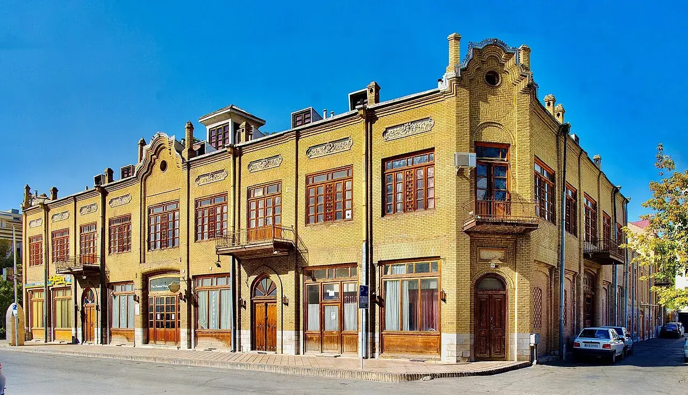

تكلفة السفر إلى مشهد · حاسبة ميزانية عملية
تكلفة السفر إلى مشهد: كيف تحسب ميزانية رحلتك؟

تتغير تكلفة السفر إلى مشهد بحسب مدينة المغادرة وتاريخ الرحلة وعدد المسافرين ومدة الإقامة ونوع الفندق وطريقة التنقل. لذلك لا أضع رقماً واحداً على أنه تكلفة ثابتة؛ الأفضل أن تجمع عروض الأسعار الحالية لكل بند ثم تحسب المجموع وفق احتياجات رحلتك.
ما البنود التي تدخل في ميزانية الرحلة؟
| البند | ما الذي تتحقق منه؟ |
|---|---|
| تذاكر السفر | سعر الذهاب والعودة، الأمتعة، التوقفات، وسياسة التعديل والإلغاء. |
| الإقامة | سعر الغرفة لليلة، عدد الغرف، الوجبات، الضرائب، وسياسة الأطفال والإلغاء. |
| الوصول والتنقل | النقل من المطار، التنقل اليومي، السيارة المناسبة وعدد التوقفات. |
| الطعام والاحتياجات اليومية | تقدير يومي لكل مسافر بحسب نمط المطاعم واحتياجات الأسرة. |
| التأمين والمصاريف الإضافية | التغطية الفعلية، التسوق، الأنشطة، وأي رسوم لم تدخل في العروض الأساسية. |
حاسبة ميزانية رحلتك بالدولار
أدخل الأسعار التي تحققت منها للفندق والطعام والنقل والتذاكر. ستحسب الحاسبة مجموعاً تقريبياً وفق البيانات التي أدخلتها، ولا تتصل بمواقع الحجز أو تعرض أسعاراً حية.
أدخل الأسعار الحالية التي حصلت عليها ليظهر تقدير ميزانيتك.
الحاسبة لا تجلب أسعاراً مباشرة؛ أدخل الأسعار التي تحققت منها.
جميع المبالغ بالدولار الأمريكي.
هذا تقدير حسابي فقط، وليس عرض سعر أو حجزاً مؤكداً. يجب تأكيد الأسعار والتوفر مع الفندق والناقل ومقدم الخدمة.
كيف تستفيد من خصم الفندق؟
قد يتاح خصم موسمي يصل إلى ٢٠٪ على بعض حجوزات الإقامة، لكن النسبة ليست ثابتة ولا تنطبق على كل فندق أو تاريخ. تتحدد بحسب الموسم ودرجة الإشغال وتاريخ الدخول والخروج ونوع الغرفة وعدد الليالي. أدخل في الحاسبة نسبة الخصم التي أكدها الفندق لك فقط، ولا تستخدم الحد الأقصى لمجرد أنه معلن.
قارن السعر النهائي بعد الخصم مع موقع الفندق والخدمات والوجبات وسياسة الإلغاء. راجع مقارنة الفنادق القريبة من الحرم قبل اتخاذ القرار.
كيف تبني ميزانية أقرب إلى الواقع؟
- حدد مدينة المغادرة والتواريخ وعدد المسافرين.
- احصل على سعر حديث للتذكرة أو النقل البري.
- اطلب عرضاً مكتوباً من الفندق يوضح عدد الغرف والوجبات والرسوم.
- قدّر الطعام والتنقل والأنشطة بحسب عدد الأيام.
- أضف التأمين والمصاريف الإضافية ومبلغاً احتياطياً.
- سجّل تاريخ كل عرض، لأن الأسعار والتوفر قد يتغيران قبل الدفع.
تختلف الميزانية بحسب طريقة السفر
للمسافر القادم من العراق، راجع خيارات السفر من العراق إلى مشهد والطريق البري. وللقادمين من الخليج أو لبنان، راجع دليل السفر من دول الخليج ودليل السفر من لبنان. تختلف تكلفة الرحلة البرية عن الجوية، ولا يصح مقارنة سعر التذكرة وحده دون احتساب الانتقال إلى المطار أو المنفذ والتوقفات.
ميزانية الأسرة
إذا كنت تسافر مع أطفال أو كبار سن، احسب عدد الغرف والأسرة الفعلية، واحتياجات الطعام والنقل والراحة. قد تكون الشقة الفندقية مناسبة لبعض العائلات، لكن قارن التكلفة الإجمالية والخدمات قبل الحجز. اقرأ دليل السفر إلى مشهد مع الأسرة ودليل استئجار الشقق.
العملة والتحويل
تعرض الحاسبة النتيجة بالدولار الأمريكي لتسهيل المقارنة. إذا كنت تدفع بالدينار العراقي أو الريال أو الدينار الخليجي أو الليرة، استخدم سعر الصرف المتاح يوم الدفع؛ لا تعتمد على تحويل قديم داخل مقال ثابت. راجع دليل العملة وطرق الدفع في إيران.
اطلب تقديراً حسب تفاصيل رحلتك
إذا أردت مراجعة الميزانية، أرسل مدينة المغادرة والتواريخ وعدد المسافرين والأطفال وعدد الليالي ونوع الإقامة وما حصلت عليه من عروض. يمكنني مساعدتك في ترتيب البنود اللوجستية ومراجعة ما يشمله العرض، مع تأكيد السعر والتوفر من مقدم الخدمة قبل أي التزام.
أسئلة شائعة عن تكلفة السفر إلى مشهد
هل توجد تكلفة ثابتة لرحلة مشهد؟
لا. تتغير بحسب التواريخ ومدينة المغادرة وعدد المسافرين والإقامة والتنقل والأنشطة.
هل الحاسبة تعرض أسعاراً مباشرة؟
لا. تحسب المجموع من الأسعار التي تدخلها أنت بعد التحقق منها من الفندق والناقل ومقدمي الخدمات.
هل الخصم الفندقي ٢٠٪ مضمون؟
لا. قد يصل الخصم إلى ٢٠٪ في بعض الحجوزات بحسب الموسم والإشغال والتاريخ ونوع الغرفة، ويجب تأكيد النسبة والسعر النهائي قبل الحجز.
هل تشمل الميزانية العلاج الطبي؟
لا. المصاريف الطبية تحتاج إلى تقدير منفصل من المستشفى بعد مراجعة الحالة، ولا يمكن تقديرها من حاسبة السفر العامة.
كيف أحسب الميزانية بعملة بلدي؟
احسب البنود بالدولار ثم حوّلها بسعر الصرف المتاح يوم الدفع، مع الانتباه إلى اختلاف طرق الدفع والرسوم.
أرسل تفاصيل رحلتك والعروض التي حصلت عليها، وسأساعدك في مراجعة بنود التنسيق قبل الاتفاق. تواصل مع حسين عبر واتساب